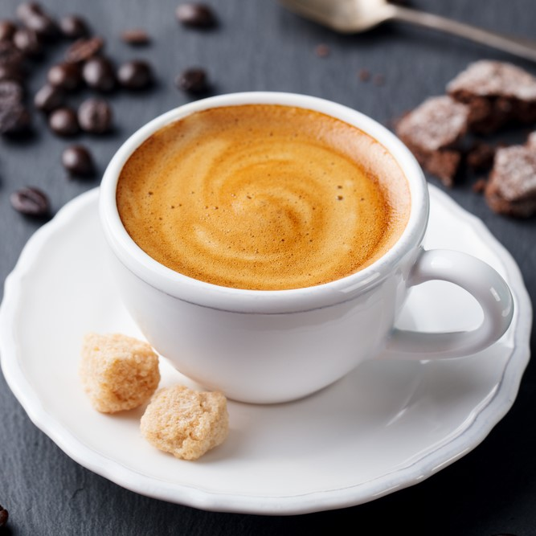
Minuman kopi murni dengan rasa yang kuat dan pekat. Sering menjadi dasar untuk berbagai minuman kopi lainnya.
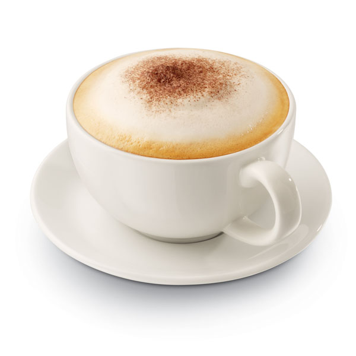
Kombinasi espresso, susu steamed, dan busa susu di atasnya. Kadang dihias dengan taburan bubuk cokelat atau kayu manis.
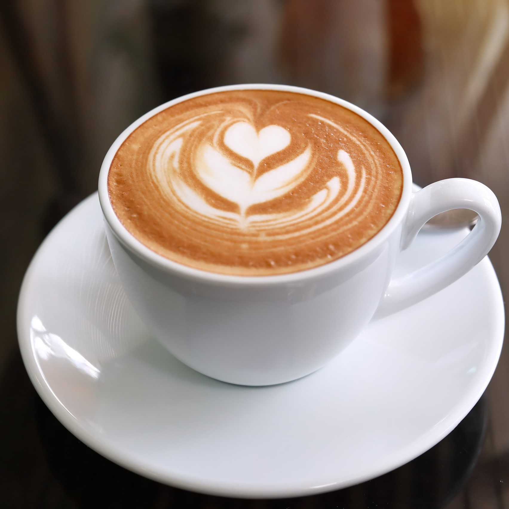
Minuman dengan perbandingan lebih banyak susu steamed dibanding espresso, menghasilkan rasa yang lebih creamy dan lembut.
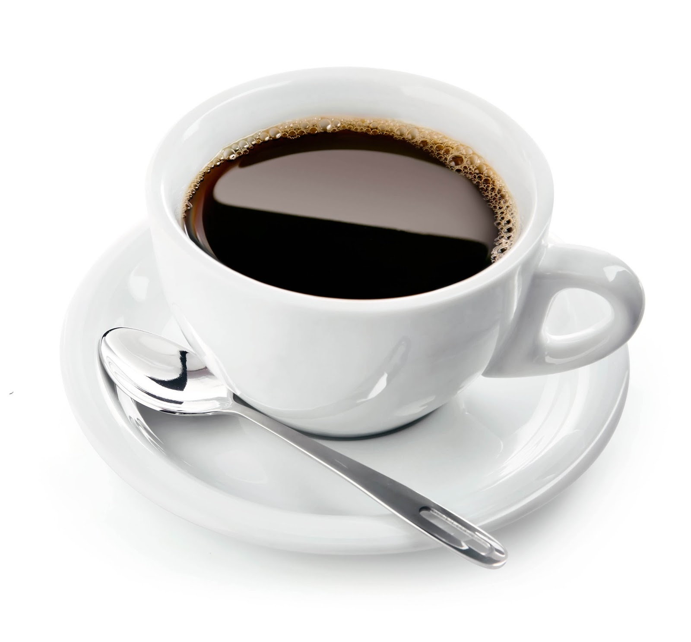
Espresso yang ditambahkan air panas, menciptakan rasa kopi yang lebih ringan dibanding espresso.
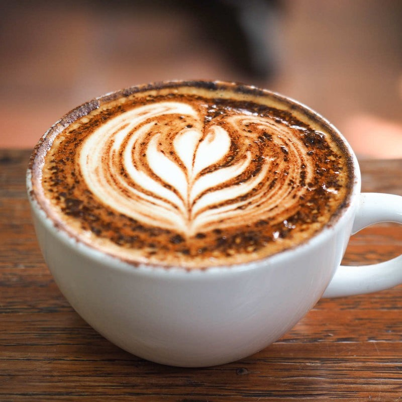
Kombinasi espresso, cokelat, dan susu steamed, memberikan rasa manis dan kaya cokelat.
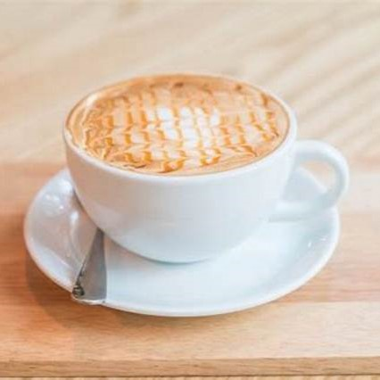
Espresso dengan sedikit busa susu di atasnya, menciptakan rasa kopi yang kuat dengan sentuhan creamy.
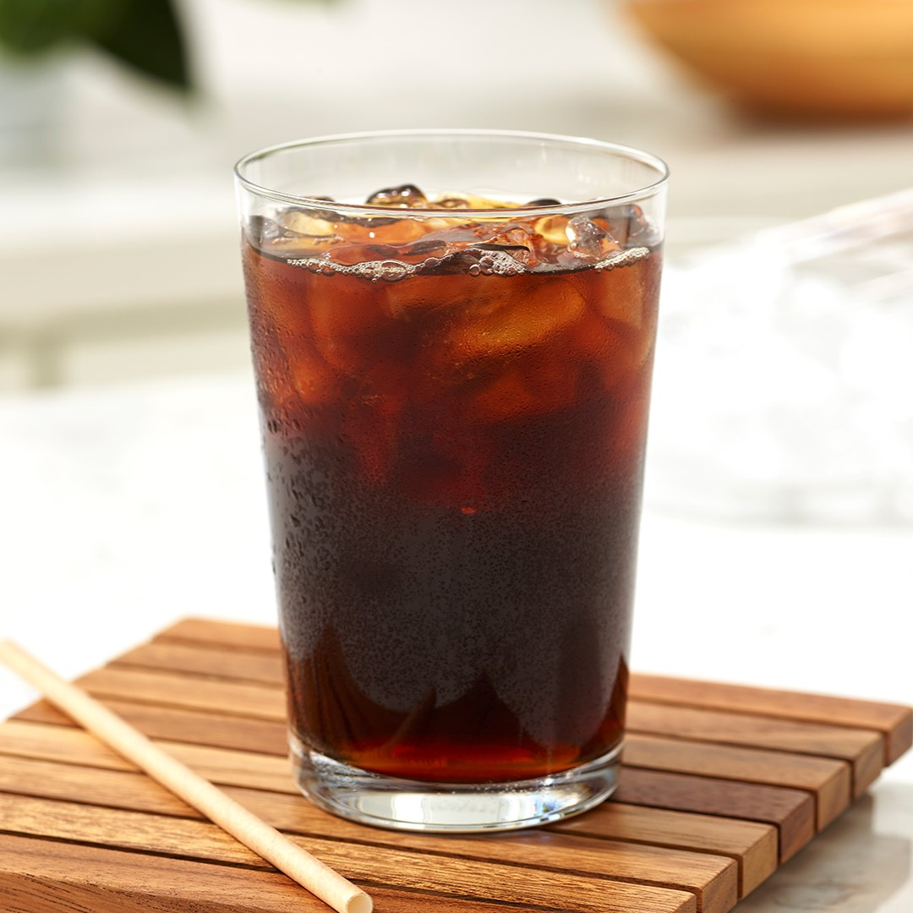
Kombinasi espresso dan air dingin dengan tambahan es batu. Rasanya ringan dan menyegarkan.
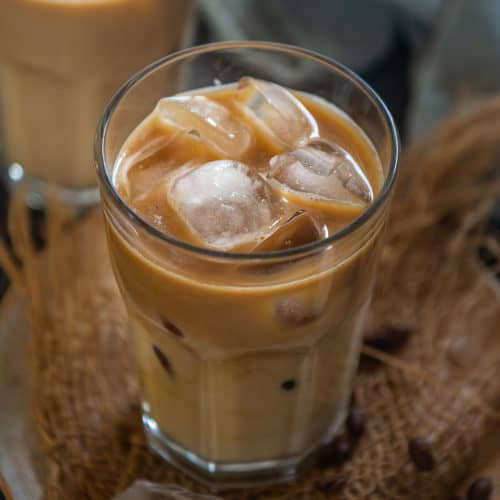
Espresso yang dicampur dengan susu dingin dan es batu, memberikan rasa creamy dengan sensasi dingin.
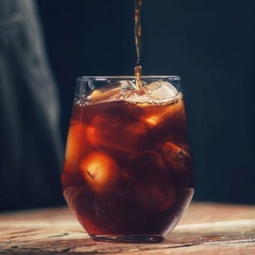
Kopi yang diseduh dengan air dingin selama 12-24 jam. Rasanya lebih halus, rendah keasaman, dan sedikit manis secara alami. Iced Caramel Macchiato.
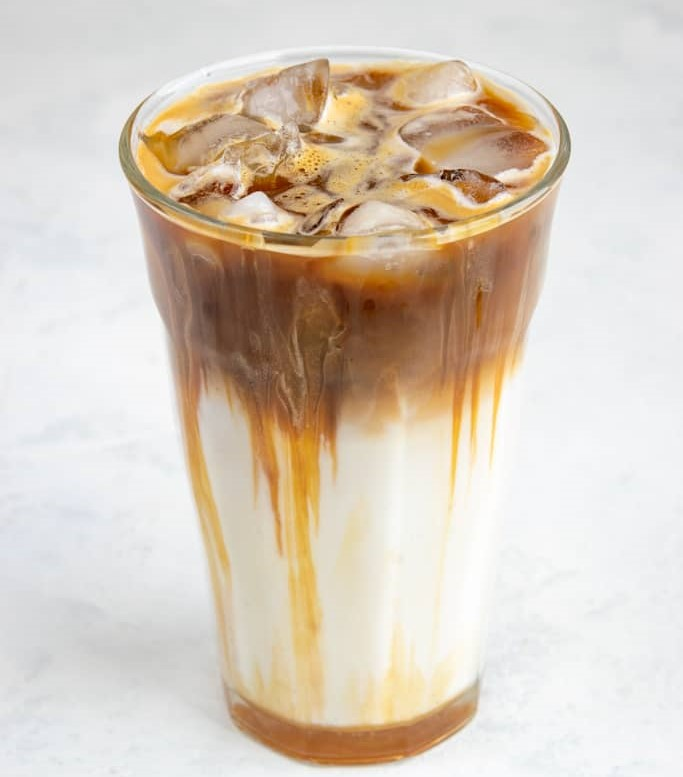
Kombinasi espresso, susu dingin, dan sirup karamel, dihias dengan lapisan karamel di atas es.
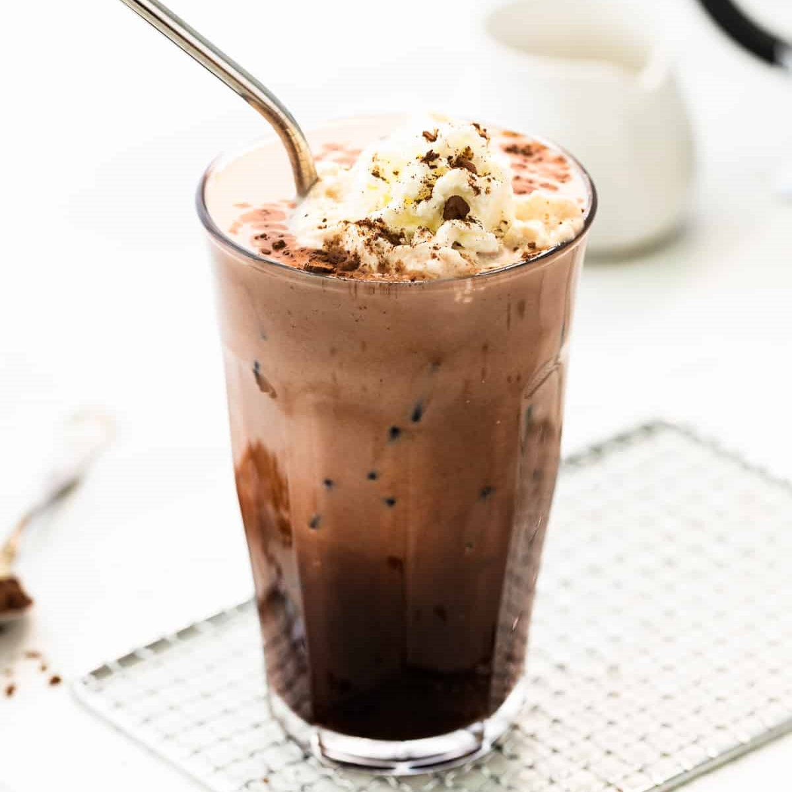
Campuran espresso, cokelat, susu dingin, dan es batu. Rasa manis cokelat berpadu sempurna dengan kopi.
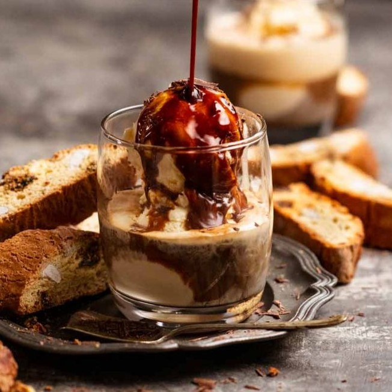
Kombinasi es krim vanila yang disiram dengan espresso panas. Sering dijadikan menu dessert sekaligus minuman.